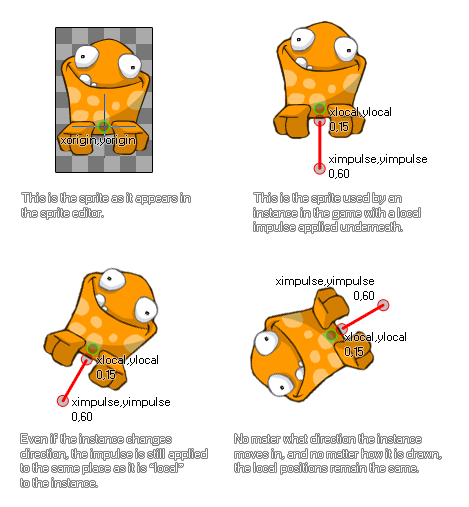

physics_apply_local_impulse(xpos, ypos, ximpulse, yimpulse)
| Streit | Beschreibung |
|---|---|
| xpos | Die x-Koordinate relativ zum Ursprung, an dem der Impuls angewendet wird |
| ypos | Die y-Koordinate relativ zum Ursprung, an dem der Impuls angewendet wird |
| ximpulse | die x-Komponente des Impulsvektors (relativ zur xpos-Koordinate) |
| yimpulse | die Y-Komponente des Impulsvektors (relativ zur YPOS-Koordinate) |
Rückkehr: N / A
Mit der Physik in GameMaker Studio 2 können Sie nicht nur Kraft und Schwerkraft auf ein Objekt anwenden, sondern Sie können auch einen Impuls anwenden. Dies ist etwas anders als bei einer Kraft, bei der es sich unmittelbar auf die Geschwindigkeit und möglicherweise das Drehmoment (oder "Spin") des Objekts auswirkt, insbesondere wenn der zum Anwenden des Impulses gewählte Punkt einen Vektor hat, der nicht ist mit dem Massenmittelpunkt ausgerichtet (Hinweis: der Massenschwerpunkt ist nicht unbedingt derselbe wie der Ursprung!). Diese Funktion wendet einen Impuls lokal auf eine Instanz an. Dies bedeutet, dass die Stärke und Richtung des Impulses basierend auf dem Ursprung (oder der Position, wenn er kein Sprite hat) der Instanz berechnet wird, ohne die Richtung oder Drehung zu berücksichtigen, die er in der Spiel- oder Physikwelt haben kann. Hier ist eine Illustration:

Wie Sie sehen können, erhält der Frosch im Bild einen Impuls von unten, um ihn "springen" zu lassen. Der exakte Impuls wird durch den Vektor definiert, den wir aus den Komponenten ximpuls / yimpuls in Bezug auf die xpos / ypos-Koordinaten erhalten - was einfach bedeutet, dass der Impuls als der Abstand von xpos / ypos zu ximpuls / γimpulse in Newton und der Richtung berechnet wird ist der Winkel, den wir von xpos / ypos zu ximpulse / yimpulse bekommen.
HINWEIS: Die Physikwelt verwendet für alle Berechnungen Zähler, und das Verhältnis der Pixel pro Meter wird im Raumeditor oder unter Verwendung definiert physics_world_create.
if jump physics_apply_local_impulse(0, 20, 0, 50);
Der obige Code wird einen Impuls mit einer Kraft von 30 Newton und einer Richtung von unten nach oben relativ zum Instanzursprung anwenden, wenn die Variable "jump" wahr ist.